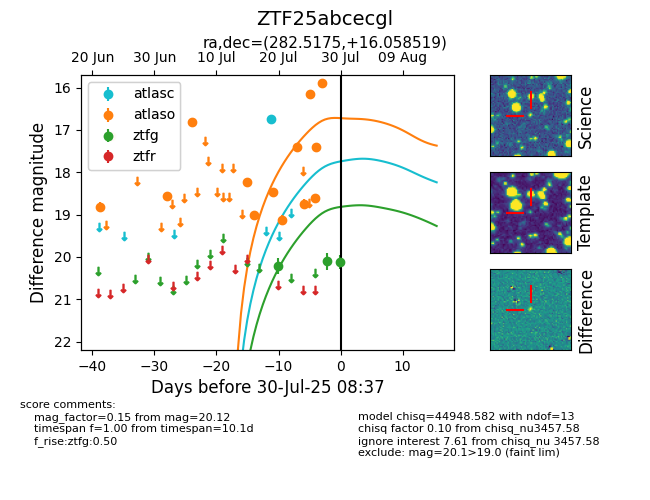

Target ZTF25abcecgl at 2025-07-30 08:37, see:
FINK: fink-portal.org/ZTF25abcecgl
Lasair: lasair-ztf.lsst.ac.uk/objects/ZTF25abcecgl
ALeRCE: alerce.online/object/ZTF25abcecgl
alt names
ZTF25abcecgl (ztf,fink)
coordinates:
equatorial (ra, dec) = (282.5175,+16.05852)
galactic (l, b) = (47.1550,+7.54116)
photometry
last atlasc=16.73, atlaso=15.90, ztfg=20.12
1 atlasc, 14 atlaso, 3 ztfg detections
